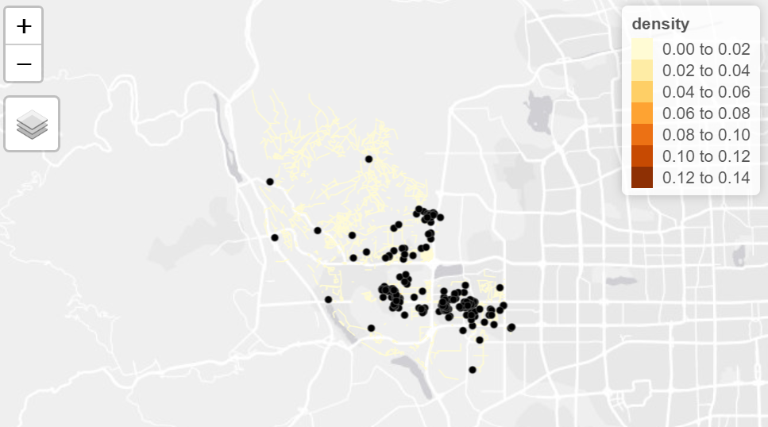

Research Report
Spatial Point Pattern Analysis of Airbnb listings in Beijing: A pre and post COVID-19 comparison
Abstract
This project aims to investigate the vulnerability of Airbnb, one of the world’s largest home-sharing companies, to the COVID-19 pandemic in Beijing, capital of China.Due to China’sstrict zero-covid policy, which aims to keep cases as close to zero as possible, it has implemented strict lockdowns that can extend to entire cities. As a result, Airbnb’s operations have been significantly impacted, particularly in China’s case. In this project, we will measure the vulnerability of Airbnb to the pandemic in Beijing by comparing pre-COVID and post-COVID listing data. To achieve this, Spatial Point Pattern Analysis (SPPA) and Network Constrained KDE (NetKDE) Analysis has been conducted to understand how the pandemic and the lockdown measures have affected Airbnb’s business model. The results highlight the significant geographical effects of measures implemented to curb the spread of the pandemic, including the closure or restricted access to public attractions, which are mostly located in central areas. This impact has greatly affected businesses in the hospitality sector, such as Airbnb. It also suggests that risk management in the hospitality sector should consider changes in the geographical spread of lodging facilities and how future locations can be strategized and optimised to better serve the needs of the market.
Introduction and Problem
Airbnb is one of the world’s largest home-sharing companies that was founded in 2007 and has since grown to over4 million hosts who welcome 1.4 billion guest arrivals across the globe with over 6.6million active listings worldwide as of 2022. Its total company value grew from US$30 billion in 2016 to over US$100 billion in 2021. Airbnb has achieved considerable global success with its short-term home-sharing business model, providing travellers with convenient and cost effective accommodation options.
However, the COVID-19 pandemic has triggered an unprecedented crisis and economic recession in many industries across the world, particularly in tourism, air travel and high contact sectors. The pandemic has significantly impacted Airbnb’s operations, especially in countries that have implemented lockdown measures like China. The year-on-year change in monthly revenue of airbnb in China alone reached over -40% in march 2020. China adopted a zero covid policy from 2019 to keep cases as close to 0 as possible. This meant imposing strict lockdowns in major cities like wuhan, shanghai and beijing, mass testing and quarantining positive cases in government facilities. Apart from the supply chain disruptions, overloading of delivery services, access to healthcare and other key amenities, travel and tourism has significantly reduced.
In this project, Beijing, as one of the world’s largest cities and a popular tourist destination in China, will be selected to measure the vulnerability of home-sharing businesses like Airbnb to the pandemic.
Motivation
By using Beijing as a case study, we seek to understand how the pandemic and the lockdown measures have affected Airbnb’s business model, its hosts, and its guests. We aim to look into:
The survival rates of Airbnb accommodations by comparing the pre-Covid and post-Covid listing data of Airbnb in Beijing.
How the economic performance of Airbnb facilities is impacted by their intra-city location, with a specific emphasis on the place-based effects
The findings of this research will contribute to the existing literature on the sharing economy, pandemic resilience, and crisis management in the tourism industry, and inform policymakers and industry practitioners on the best practices for ensuring the sustainability and competitiveness of the sharing economy model in the post-pandemic era.
Methodology
Data sources
This project uses the following data sources
Airbnb listings before Covid in Beijing (2019): https://www.kaggle.com/datasets/merryyundi/airbnb-beijing-20190211
Airbnb listings after Covid in Beijing (June 2022): http://insideairbnb.com/get-the-data
Beijing neighbourhoods: http://insideairbnb.com/get-the-data
Beijing road network data: https://download.bbbike.org/osm/bbbike/Beijing/
R studio was chosen to host all front and back end operations due to its flexibility and customisability needed for a targeted and specific spatial point pattern analysis application.
Spatial Point Pattern Analysis (SPPA)
Installing relevant R packages
The following R packages were installed for data wrangling and subsequent analysis steps. The following table lists a detailed description of each R package.
| Package | Description |
|---|---|
| maptools | For ease of manipulation of geographic data |
| sf | For access, storage and manipulation of simple features data types |
| sp | Provides classes and methods for spatial data |
| rgdal | Provides projection and transformation functionalities |
| raster | For analysing spatial data, generating raster maps from spatstat outputs |
| tmap | For creating cartographically accurate maps |
| tidyverse | For manipulation of csv and tibble data types |
| plotly | Create interactive web graphics from ‘ggplot2’ |
| spatstat | For various types of advanced spatial point pattern analysis |
| devtools | For ease of using R developmental environment |
Data Wrangling
This step is necessary as a data preparation step to import raw input data from csv files into R studio’s environment, data cleaning and setting standardised projection systems before actual analysis is performed. Upon importing the csv files, unnecessary columns are removed, a check for null values in latitude and longitude columns are done, and crs or projection systems are changed using the st_as_sf() function which sets the projection to EPSG 4555 for Beijing. Initial visualisation using tmap is performed to get an overview of the location of Airbnb listings before and after Covid in Beijing. Then removal of excess Airbnb listings falling outside of the Beijing study area is done to ensure an accurate scope.
Data would have to be converted to ppp format from the spatstat package for subsequent analysis, therefore sf objects would need to be prepared using the following steps: conversion to sp - spatial point - object, conversion to ppp object, check the converted objects for duplicates and handle them using rjitter() that prevents the same point data from occupying the exact same geographic location. Lastly, the owin object can be created to restrict the study area to Beijing.
This marks the end of the data preparation process and Kernel Density Estimation for First and Second order can be performed.
First Order SPPA
The first order spatial point pattern analysis uses Kernel Density Estimation (KDE) to derive and visualise the intensity of point processes in the study area and allows for comparison of the distribution of Airbnb listings before and after Covid in Beijing. It analyses how the distributionand intensity of Airbnb listings could have been influenced by Covid and pandemic restrictions. KDE methods use a known density/ kernel function to average across observed data points to create a smooth approximation. It generates a grid and assigns a density value for points centered on that cell.
Using the density() function from the base R package, bandwidth type ‘bw.diggle’ was chosen as it minimises the mean squared error of kernel smoothing estimators. Bw.diggle returns a smoothing parameter that adjusts the bandwidths of the kernels such that they have equal variance(Diggle, 2003, page 118) and selects the optimum value to avoid over smoothening - masks the structure of the data - or under smoothening - yields a spiky and hard to interpret output (Fig 1).
The ‘gaussian’ kernel type estimator was selected to generate the KDE maps of Beijing before and after Covid because the input data is univariate and the underlying distribution being estimated is also gaussian, hence according to Wand and Jones (1995) gaussian is the optimal estimator.
First order analysis was performed on Beijing as a whole to enable users to have an overview of the distribution of intensity of listings before deep diving into the district level analysis in second order spatial point pattern analysis.
Second Order SPPA
Second order spatial point pattern analysis investigates the interaction effect between observations, in this context, the before and after Covid interaction effects on Airbnb listings. The G and L functions were performed for the following selected districts - Shi Jing Shan, Ping Gu and Shun Yi (石景山，平谷，顺义). These districts were selected based on their distance from central Beijing, where Shi Jing Shan is nearest central Beijing, followed by Shun Yi and Ping Gu. a district level analysis yields more insight into the distribution of spatial point patterns or Airbnb listings.
G function
The G function - Gest() from the spatstat package - measures the distribution of distances from an arbitrary point to its nearest event which can reveal the clustering patterns of Airbnb listings and determine whether they are clustered, dispersed or random before and after Covid. Monte Carlo Complete Spatial Randomness (CSR) simulations were used to determine the minimum and maximum simulation envelopes at 95% confidence level, outside of which would mean that there is less than 5% chance that the spatial patterns are resulting from the simulations.
The null hypothesis is that distributions of Airbnb before or after Covid are random at 95% confidence level. If the G(r) is above the upper envelope, the listings are said to be clustered. If the G(r) is below the lower envelope, listings are dispersed and spread out from one another. If the G(r) is within the envelopes, the distribution is random.
L function
The L function (Besag’s 1977) - using Lest() from spatstat package - for Second Order Spatial Point Pattern analysis is a normalised Ripley’s K function that allows easier interpretation of results as it transforms the K function output and displays the expected K values - denoted by a red dashed line - on the horizontal axis; lower values of r can be easily interpreted and compared to the expected value. It is calculated in the following formula (Fig 2).
Similarly, CSR tests were performed and 39 simulations were run on each of the districts before and after Covid at 5% confidence level. This number is derived from the nsim calculation where alpha is equal to 2 * nrank / (1 + nsim). Taking nrank default value of 1, nsim at 0.05 alpha value will be 39.
The null and alternative hypothesis will be the same as that for G function taken at the same - 95% - confidence level. If the L(r) is above the upper envelope, the listings are said to be clustered. If the L(r) is below the lower envelope, listings are dispersed and spread out from one another. If the L(r) is within the envelopes, the distribution is random.
Network Constrained SPPA
The following R packages were installed for data wrangling and subsequent analysis steps. The following table lists a detailed description of each R package.
| Package | Description |
|---|---|
| sp | Provides classes and methods for spatial data |
| sf | For access, storage and manipulation of simple features data types |
| spNetwork | Provides functions to perform Spatial Point Patterns Analysis such as kernel density estimation (KDE) and K-function on network. |
| tmap | Provides functions for plotting cartographic quality static point patterns maps or interactive maps by using leaflet API. |
| tidyverse | For manipulation of csv and tibble data types |
| rgdal | Provides bindings to the ‘Geospatial’ Data Abstraction Library (GDAL) (>= 1.11.4) and access to projection/transformation operations from the PROJ library. |
| spatstat | Provides classes and methods for dealing with spatial data in R. In this exercise, it will be used to manage SpatialPointsDataFrame and SpatiaLlinesDataFrame, and for performing projection transformation. |
| maptools | For ease of manipulation of geographic data |
Data Wrangling
Before conducting Network Constrained KDE Analysis, it is crucial to select necessary variables and conduct proper data-preprocessing steps.The data pre-processing includes importing geospatial data (Beijing.geojson) and aspatial data (beijing listings before and after covid ) and removing unnecessary columns. Then, function st_as_sf() is utilised to to convert them to simple features objects. After that the CRS is transformed and checked by using the st_transform() and st_set_crs() function for proper Coordinate Reference system. Followed by identifying if invalid geometry and missing values exist. For our data preprocessing, there is no invalid geometry and missing values, hence the cleaned data is ready for conduct Network Constrained KDE Analysis
Network Constrained Kernel Density Estimation
Network Constrained Kernel Density Estimation (KDE) is a spatial analysis technique for estimating the density of points (e.g., events, features, etc.) on a network, while taking into account the network structure and distance. In this project, it is used to understand the spatial distribution of events (Airbnb listings) on the Beijing road network.
In order to conduct a comprehensive Network-Constrained KDE analysis, three specific districts were chosen to be the focus of the study: Shi Jing Shan, Hai Dian, and Feng Tai (石景山，海淀，丰台). These districts were selected due to their central location within Beijing and their availability of complete road network data.
When conducting Network Constrained KDE (NetKDE) Analysis, it is important to confine the analysis within the districts. Hence, we have filtered out each district from Beijing geojson and only kept the listings and road network within the district boundaries by using subset() function. Then, visualisation for the listings and network status for each district is created for both before and after Covid period. Lastly, CRS are assigned again before reaching to the analysis stage.
Network Constrained KDE (NetKDE) Analysis
To compute NetKDE, the SpatialLines object needs to be divided into lixels with a specified minimum distance, which was accomplished by using the function lixelize_lines() from the spNetwork package,then lines_center() function from the spNetwork package was used to create a SpatialPointsDataFrame.
Next, the nkde function was used to calculate Network Constrained Kernel Density Estimates (NetKDE) of the listings in each district: Shi Jing Shan, Hai Dian, and Feng Tai (石景山，海淀，丰台). The NetKDE is calculated using a quartic kernel with a bandwidth of 300 metres and the “simple” method, the quartic kernel is used as it provides a good balance between smoothness and responsiveness to local variations in the data. The “agg” parameter was set to 10 specifying that listings within a 10-meter radius should be aggregated to speed up the calculation. The resulting NetKDE is stored in the variable “densities’.
The visualisation is then created to visualise the densities of the listings and networks that has relatively higher listings by using the tmap library, the visualisation is shown as below
| Before Covid | After Covid | |
| ShiJingShan |  | |
| HaiDian | ||
| FengTai |
The visualisation helps to directly get an overview of the survival rates of Airbnb accommodations before and after Covid, from the application it could be observed that the network that has higher density of listings are located at the edge of the district, and the findings are applicable to all of the three districts selected.
R shiny Demonstration
Analysis for particular district
SPPA
NetSPPA
Conclusion
The measures implemented to curb the spread of the pandemic had significant geographical effects. The closure or restricted access to public attractions, mostly located in central areas, greatly impacted the home-sharing and accommodation businesses like Airbnb. Risk management in the hospitality sector should be aware of changes in geographical spread of lodging facilities and consider how to strategise and optimise future locations of such facilities to better serve the needs of the market.
Future work
This analysis can be extended to other popular cities for Airbnb listings like Sydney, South Korea and New York, to understand the vulnerability of Airbnb and other home-sharing businesses to the pandemic varies across different contexts. Moreover, exploring the impact of the pandemic on the demand for different types of Airbnb accommodations, such as entire apartments, shared rooms and hotel rooms or the nature of the listing (short-term/long term) is also meaningful for future research.